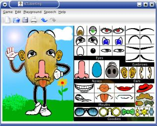
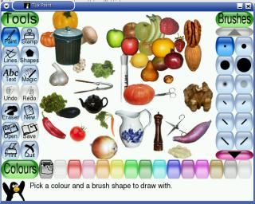

...making Linux just a little more fun!
Here in Ireland we have a talk show, the Late Late Show, which has the distinction of being the world's longest running talk show. Every year, a couple of weeks before Christmas, they have the Late Late Toy Show, to give parents and children an idea of what's available.
Since Christmas is approaching, I thought I'd try to bring this tradition over to the Linux Gazette. There is a lot of very good children's software available for Linux, but unfortunately not a high level of awareness of it.
I'll be focusing on the seven-year old age group, simply because my son, Mark, is seven (and an all-important half) and the software he likes is the software that has stayed on the machine.
KTuberling, or Potato Guy, is part of KDE. The idea is simple; it's a virtual Mr. Potato Head. Mark has had hours of fun with it over the last two years.
KTuberling has an option to save an image of the Potato Guy. This is a great idea - Mark had a couple of his creations as his wallpaper until I installed Tuxpaint.
Stickers is a sticker board program; you pick up a sticker from the palette, and place it where ever you like. The stickers can be resized, used as brushes, flipped around, have their saturation and brightness changed, etc.
The program has a great function which allows you to keep the mouse pointer confined to stickers' window. This is great for younger children, who haven't learned how to keep control over the mouse. Mark has been using this for over three years, and shows no sign of growing tired of it.
Tuxpaint is a paint program from Tux4Kids and New Breed Software, and the first in a series which will include a word processor and a DTP program. Tuxpaint at first glance is a normal paint program, albeit one with an interface suitable for the very young; but there are two options on the menu which make it special, "Magic" and "Stamp".
The stamps are a range of images which can be placed anywhere on the canvas, much like Stickers. The magic menu has thirteen effects which can be applied to the image, from the unique, such as the "drip" effect, which makes the selected portion of the image look like the paint ran; to standard effects, such as pixelization ("blocks"), with a childish touch.
Help is provided at the bottom of the screen, where Tux gives a brief instruction on how to use each tool.
GCompris is the daddy of kids programs for Linux. It's a framework for board based children's games, and includes many games for many ages. The package covers all age groups, with activities that range from teaching the alphabet to teaching chess. It also includes several games which have less educational value.
The activities come in 5 categories: reading, amusements, computers, board based, and algebra. The amusement category seems to be the miscellaneous section; there is a subsection for learning colors, the difference between left and right hands, and how to read an analog clock. There is also a continents jigsaw, where the country must be placed in the correct place, and I have to admit that I learned from this.
The computer section has activities to build keyboard and mouse skills, and the algebra section has several activities. Taken as a whole, these are better for younger children than tuxmath, as addition, subtraction, multiplication and division can be taken individually.
One difficulty I faced with GCompris is that at first I couldn't get the sound to work. GCompris uses audio in Ogg Vorbis files, so adding a .libao file in my home directory with the entry default_driver=arts sorted it out.
The first place any parent should start looking for software for their children is Linux for Kids. The site doesn't look to be frequently updated, but I haven't found any broken links.
Debian users are spoiled for choice because of the Debian Jr. subproject. Debian Jr. is aimed at "children from 1 to 99", and makes sure that the best software for children is just an apt-get away.
SEUL/edu is a project aimed at promoting educational software. Though not all of the software listed in their application index is aimed at kids, quite a lot is. You may even find something you'll find useful for yourself: I found LingoTeach there.
If you're interested in seeing Linux in schools, have a look at the Schoolforge project, which exists to make sure that Linux has all the tools needed by schools.
Jimmy is a single father of one, who enjoys long walks... Oh, right.
Jimmy has been using computers from the tender age of seven, when his father
inherited an Amstrad PCW8256. After a few brief flirtations with an Atari ST
and numerous versions of DOS and Windows, Jimmy was introduced to Linux in 1998
and hasn't looked back.
In his spare time, Jimmy likes to play guitar and read: not at the same time,
but the picks make handy bookmarks.